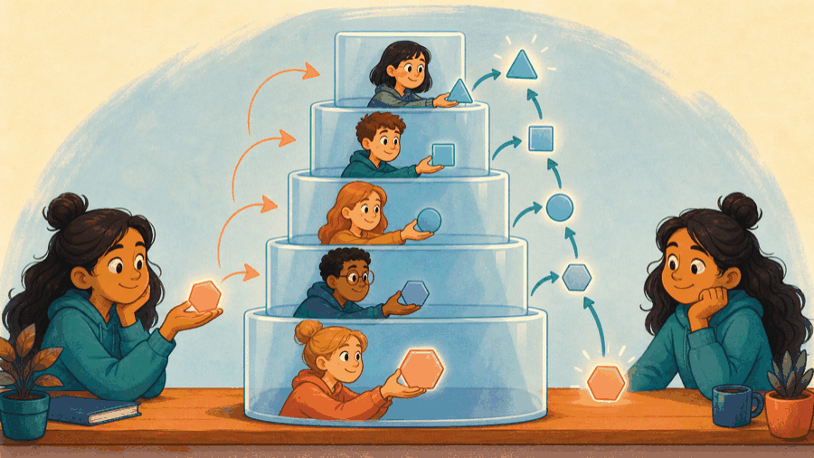
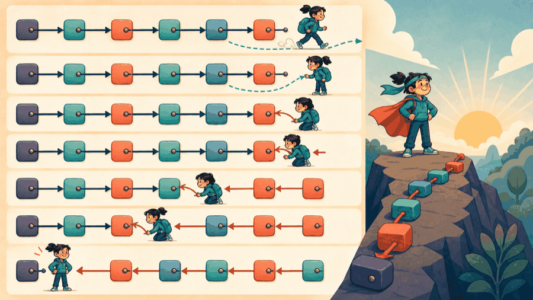

# Lecture 16: Prove recursive progress to a base case ## Prove a smaller call reaches a base case **Instructor:** [Dr. Debasish Pattanayak](https://drdebmath.github.io)
## The base case handles an empty or one-node list. · Reverse a linked chain recursively The recursive call solves the smaller tail; pointer rewiring makes the old head the new tail. ~~~cpp struct Node { int value; Node* next; }; Node* reverse(Node* head) { if (!head || !head->next) return head; Node* newHead = reverse(head->next); head->next->next = head; head->next = nullptr; return newHead; } ~~~ **Takeaways** - The base case handles an empty or one-node list. - The call stack remembers each old head. - The algorithm is meaningful because of the linked structure.
## The general form of a recursive function and a backtracking search ~~~cpp <return type> <name>(<parameters>) { if (<base case condition>) return <base case result>; // returns without calling <name> again return <combine>(<name>(<strictly smaller argument>)); } void <solve>(<state>) { if (<state is complete>) { <record the solution>; return; } for (<each candidate choice>) { <apply the choice>; // change the state <solve>(<state after the choice>); <undo the choice>; // restore it for the next candidate } } ~~~ | Part | Meaning | | --- | --- | | <code><base case condition></code> | The case answered outright. Without one, the recursion never stops. | | <code><strictly smaller></code> | Every call must move measurably closer to the base case — smaller <code>n</code>, shorter list, fewer choices. | | <code><combine></code> | What this call adds to the answer the smaller call returns. | | <code><undo the choice></code> | Backtracking's defining step. Skip it and later branches search a state the earlier branch dirtied. | | the stack | Each active call holds a frame until it returns, so depth costs memory as well as time. | State the base case and the shrinking measure before writing the recursive call; those two facts are the termination proof.
## Each recursive call adds a frame and must eventually return For <code>factorial(3)</code>: 1. <code>factorial(3)</code> waits for <code>factorial(2)</code>. 2. <code>factorial(2)</code> waits for <code>factorial(1)</code>. 3. The base case returns 1. 4. Waiting frames finish in reverse order.
## Every recursive call moves toward its base case ~~~cpp int factorial(int n) { if (n <= 1) return 1; return n * factorial(n - 1); } ~~~ The argument decreases, so a non-negative input reaches the base case.
## The first call asks a smaller call for help <figure class="course-meme-figure"> <p></p> <figcaption> <p class="course-meme-setup"><strong>Setup</strong> The first call asks a smaller call for help.</p> <p class="course-meme-punchline"><strong>Punchline</strong> Every unfinished call waits on the stack until the smallest one comes home.</p> </figcaption> </figure>
## Recursive reversal rewires one node and delegates the suffix ~~~cpp Node* reverse(Node* head) { if (head == nullptr || head->next == nullptr) return head; Node* newHead = reverse(head->next); head->next->next = head; head->next = nullptr; return newHead; } ~~~
## Backtracking explores, recurses, and undoes each choice Choose one value for the current position, recursively arrange the remainder, then undo the choice. The data structure is an array; recursion supplies the search order.
## Recursion promises it will stop "eventually" <figure class="course-meme-figure"> <figcaption> <p class="course-meme-setup"><strong>Setup</strong> Recursion promises it will stop eventually.</p> <p class="course-meme-punchline"><strong>Punchline</strong> "Eventually" needs a stone that is measurably smaller each time.</p> </figcaption> </figure>
## Game evolution: Recursive search explores and undoes choices | Today's concept | Exact game part enabled | |---|---| | recursion and backtracking | ask whether the Cleaner can reach dirt through open cells | ~~~cpp #include <string> #include <vector> bool reaches(std::vector<std::string>& grid,int row,int column) { if (row<0 || column<0 || row>=static_cast<int>(grid.size()) || column>=static_cast<int>(grid[0].size()) || grid[row][column]=='#') return false; if (grid[row][column]=='*') return true; grid[row][column]='#'; return reaches(grid,row-1,column) || reaches(grid,row+1,column) || reaches(grid,row,column-1) || reaches(grid,row,column+1); } ~~~ **Progress argument:** every recursive branch either stops or marks one previously open cell. **Next unlock · L17:** accelerate repeated collision checks and prioritize dirt.
## Memoization avoids repeated subproblems in LCS For two strings, an LCS recurrence compares their final characters and reduces one or both prefixes. The direct recursive version repeats subproblems. Memoization stores results so identical states are solved once.
## Recursion trades stack space and repeated work for clarity - Recursive list reversal: O(n) time, O(n) call-stack space. - Iterative reversal: O(n) time, O(1) auxiliary space. - Permutation generation: at least proportional to the number of produced permutations. Complexity describes growth, not stopwatch seconds.
## The head says the rest of the list can handle itself <figure class="course-meme-figure"> <p></p> <figcaption> <p class="course-meme-setup"><strong>Setup</strong> The head says the rest of the list can handle itself.</p> <p class="course-meme-punchline"><strong>Punchline</strong> It comes back, rewires one link, and trusts the rest was handled.</p> </figcaption> </figure>
## Prove termination, trace frames, and measure recursive cost - A recursive call must receive a smaller problem. - A base case handles the smallest problem directly. - Stack frames consume space. - Recursion can expose natural structure, while iteration may use less memory.
## Verify Reverse a linked chain recursively with a claim, trace, boundary, and improvement Use the practical example as a small experiment. Before you leave, make the reasoning visible: - **Claim:** The base case handles an empty or one-node list. - **Trace:** name the state that changes and the observation that would confirm it. - **Boundary:** choose one smallest, largest, empty, or invalid input that could expose a defect. - **Improvement:** explain one change that would make the solution clearer or safer. ### Exit ticket Choose one problem to solve now and two to attempt in the lab: - Trace recursive factorial and draw every stack frame. - Generate all permutations of a string without duplicates. - Compute the longest common subsequence recursively with memoization.
## Explain Reverse a linked chain recursively without opening the code Explain today’s idea to a partner without opening the code: 1. State the input, output, and one rule the solution must preserve. 2. Point to the operation that makes progress or changes the state. 3. Name the first test you would run after changing the implementation. If the explanation needs “and then another unrelated thing,” split the design before you code.
## Solve five problems to transfer Reverse a linked chain recursively **IC151 lab practice · 5 problems** 1. Trace recursive factorial and draw every stack frame. 1. Generate all permutations of a string without duplicates. 1. Compute the longest common subsequence recursively with memoization. 1. Reverse a linked list iteratively and compare space use. 1. Implement bucket sort for normalized decimal values. Reaching this set marks the lecture as studied in this browser. [Open the IC151 lab setup and batch schedule](ic151.html).
## Search choices, undo dead ends, and avoid recomputing identical states. **Studio thread:** Explore mazes and repeated subproblems | Ask | Today’s answer | |---|---| | **Problem** | Search choices, undo dead ends, and avoid recomputing identical states. | | **Model** | Each call owns one smaller state and returns an answer to its caller. | | **Represent** | The call stack records choices; a memo table stores solved states. | | **Solve** | Use recursion for structure, backtracking for reversible choices, and memoization for repeated subproblems. | | **Verify** | Prove a decreasing measure reaches a base case and trace each undo. | | **Improve** | Replace repeated recursion with memoization or an iterative frontier when useful. | **Technique lens:** recursion, backtracking, and dynamic programming **Compare:** direct recursion versus memoized or iterative solutions